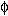
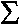
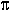
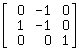
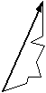
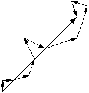
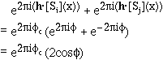
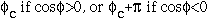
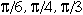
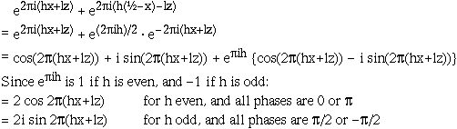

|
Basic Maths for Protein Crystallographers |
| Structure factor |
There are many atoms in the unit cell and the reflections we see are the sum of all their diffraction waves.
F(h k l) or F(h) = |F(h)|ei(h) =
i=1,N g(i,S) e2i (hxi+kyi+lzi) where N = number of atoms
Grouping symmetry-related atoms together:
F(h) =
i=asymm.
unitg(i,S) (
e2i (h k l) +
e2i h·[Si] +.... ) = |F(h)| eih
An aside: from this expression it is easy to show that the symmetry equivalent reflection h',k',l' is [h k l][Si]. This means it is NOT always possible to simply replace x,y,z with h,k,l in the International Tables notations. In particular for a 3fold:
[h2 k2 l2] = [h k l]  = [k (-h-k) l]
For acentric reflections the phase for each atom is randomly distributed: 
If the atoms are positioned relative to a different origin, the phase of the structure factor will change but not its magnitude. Replacing (xi,yi,zi) by (xi+Ox, yi+Oy, zi+Oz), the structure factor contribution becomes
e2i{h(xi+Ox)+k(yi+Oy)+l(zi+Oz)} = e2ih·x e2ih·O
for all atoms, and the structure factor now equals
|F| ei e2ih·O
A list of alternative origins is available in $CHTML/alternate_origins.html.
The magnitude of the structure factor is also the same if the atoms are on a different hand,
i.e. all xi,yi,zi are replaced by
(-xi,-yi,-zi) and none of the atoms scatter anomalously.
In this case
|F(h)|
ei(h)
becomes
|F(h)|
e-i(h).
N.B.: For some space groups, changing the hand of the atoms also changes the symmetry operators, e.g. a 1/3 stepping screw axis will convert to a -1/3 stepping axis (i.e. the P31 symmetry converts to P32).
| For centric reflections the phase for atom pairs are related such that the contributions from two atoms of a pair always equal c or c + : |  |
Each atom has a symmetry partner such that their combined contribution to the structure factor can be written as:

The phase can then only be

In fact the only values c can take are 0, , etc.
As an example in spacegroup P212121, with symmetry-related positions x,y,z and -x+½,y+½,-z, for zone (h 0 l):
